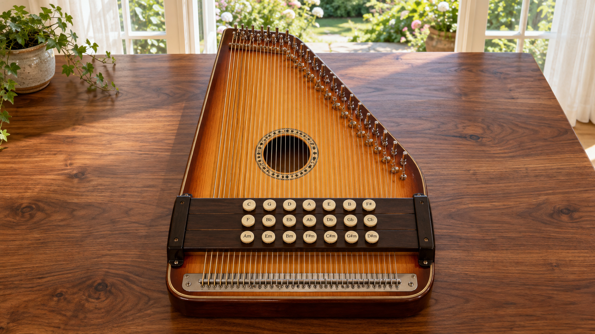

Tap Enable sound, tap one of the ivory chord buttons, then brush left or right across the exposed strings. Tap an individual string to pick it.
The default: tap a chord and it stays pressed. Perfect for playing with a mouse or one hand.
Like a real autoharp: hold a chord with one finger and strum with another. Release the bar to open the strings. Holding two bars lets only their shared strings ring. With a mouse, hold a keyboard chord key while strumming, or choose Latch.
Pressing a bar mutes notes outside the chord—even strings that are already ringing. Plucked strings light up as they ring.
Brush slowly for an arpeggio or quickly for a full chord. Pick higher or lower on the strings for a change in color.
Choose Sunlit windows, Classroom studio, Moonlit manor, or Stormy old house using the scene menu below. Each scene stays still while you play and fits your screen automatically. On a smaller screen, you can also choose your chord in Options.
Tap Auto strum at the top, or open Options → Strum. Choose from eight patterns, set a tempo from 40–180 BPM, and press Start auto strum. Tap chord buttons as you play; Latch mode is easiest for one-handed accompaniment. The moving highlight shows the pattern. In 6/8, BPM counts dotted-quarter beats. Changing a pattern restarts its first beat. Use the top Stop strum button, Damp, or Esc to stop. Pattern and tempo are remembered, but playback always starts manually. Auto strum is included in recordings.
Press Record, play the autoharp, then press Stop. Play back your take or choose Download audio to keep it. Recording captures the instrument sound, including reverb. You can reopen your last take under Options → Playing. Keep this page visible while recording.
36 sampled notes in standard F2–C6 autoharp tuning. The standard 21-button layout has 8 major, 8 dominant seventh, and 5 minor chords, with conventional felt-bar bass damping. Choose from six sampled instrument sounds under Options. Your choice is remembered on this device. Sounds rendered from GeneralUser GS 1.471 by S. Christian Collins. SoundFont credits & license. Use headphones or speakers for the fullest sound.
Created by Drew Wunschman
If you enjoy using this software,please consider donating.